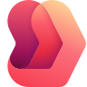

Un ERP que cierra a tiempo.
Business Central o Dynamics 365 Finance y Supply Chain: te ayudamos a elegir e implementamos el que corresponde a tu escala.
¿Te identificas con alguna de estas situaciones?
Son las situaciones que más vemos al iniciar un proyecto. Si te identificas con alguna, conversemos.
ConversemosCierres eternos
El cierre mensual toma días de conciliaciones manuales.
ERP que no escala
El sistema actual no soporta nuevas sociedades, países o volumen.
Inventario opaco
No hay visibilidad confiable de stock y abastecimiento.
Integraciones frágiles
Cada sistema se conecta con archivos y procesos nocturnos.
Tecnología Microsoft, elegida según tu proceso.
Business Central
ERP para empresas medianas: finanzas, compras, ventas e inventario.
Cuándo conviene: Cuando buscas un ERP completo con implementación ágil.
Dynamics 365 Finance
Finanzas globales, multi-sociedad y multi-moneda.
Cuándo conviene: Cuando la operación financiera es compleja o multinacional.
Dynamics 365 Supply Chain Management
Abastecimiento, manufactura, bodegas y logística.
Cuándo conviene: Cuando la cadena de suministro es crítica para el negocio.

Dynamics 365 Project Operations
Gestión de proyectos, recursos y facturación por avance.
Cuándo conviene: Cuando vendes y entregas servicios por proyecto.
Los íconos y nombres de productos son marcas de Microsoft y se usan solo para identificar los productos que implementamos.
Success by Design, por olas.
El marco de implementación de Microsoft para Dynamics 365, entregado en olas cortas: la primera sale a producción con el proceso más urgente y las siguientes amplían lo que ya está en uso.
-
Entendemos tu negocio y definimos qué sale primero a producción.
Success by Design · Se inicia el Solution Blueprint ReviewQué hacemos
- Levantamiento y validación de requerimientos con los dueños de proceso.
- Mapeo de procesos, datos y sistemas actuales.
- Definición de olas: qué sale primero a producción y qué viene después.
- Priorización de casos de uso de IA y evaluación de datos y gobierno.
Qué recibes
- Enfoque de solución de alto nivel.
- Plan por olas con alcance y criterios de éxito.
- Riesgos identificados desde el inicio.
IAIA en esta fase
Análisis automático de entornos y del modelo entidad-relación, y priorización de casos de uso de IA.
-
Diseñamos la solución completa antes de construir.
Success by Design · Solution Blueprint ReviewQué hacemos
- Definición de todos los frentes de trabajo y del plan detallado.
- Arquitectura: modelo de datos, seguridad, integraciones y ALM.
- Alcance de cada agente y puntos de supervisión humana.
- Revisión de IA responsable: privacidad, transparencia y responsabilidad.
Qué recibes
- Solution Blueprint: el diseño completo de la solución.
- Plan de proyecto actualizado.
- Estrategias de pruebas y de migración de datos.
IAIA en esta fase
Borradores de diseño y de reglas de negocio generados con IA y revisados por nuestros arquitectos.
-
Construimos por sprints, con demos y revisiones técnicas en el camino.
Success by Design · Implementation ReviewsQué hacemos
- Configuración y desarrollo en sprints, con demo al cierre de cada uno.
- Integraciones y migración de datos.
- Implementation Reviews: datos, seguridad, integración, ALM y pruebas.
- Prototipado y evaluación de agentes: precisión, cobertura, seguridad y latencia.
Qué recibes
- Incrementos funcionales probados en cada sprint.
- Hallazgos y recomendaciones de cada revisión.
- Agentes evaluados con escenarios reales.
IAIA en esta fase
Personalizaciones asistidas por IA y pruebas automatizadas.
-
Preparamos a las personas y la salida a producción.
Success by Design · Go-live Readiness ReviewQué hacemos
- Pruebas de aceptación (UAT) y capacitación de usuarios.
- Plan de cutover con criterios go/no-go y simulacros de go-live.
- Modelo de soporte y runbook de despliegue.
- Validación de agentes con datos representativos de producción y monitoreo listo.
Qué recibes
- Usuarios capacitados y UAT aprobada.
- Plan de cutover y runbook de despliegue.
- Go-live con soporte reforzado (hypercare).
IAIA en esta fase
Medición del uso real desde el primer día para guiar la adopción.
-
Estabilizamos, medimos y preparamos la siguiente ola.
Success by Design · Estabilización y transición a soporteQué hacemos
- Estabilización posterior al go-live.
- Soporte y mantención de aplicaciones (AMS).
- Monitoreo continuo de agentes: calidad de respuestas, uso y desvíos.
- Siguiente ola: mejoras y nuevos casos de uso.
Qué recibes
- Soporte AMS con niveles de servicio acordados.
- Evaluaciones periódicas de agentes y actualizaciones de plataforma.
- Roadmap de evolución de la solución.
IAIA en esta fase
Agentes en producción con monitoreo continuo y evaluaciones periódicas.
Como Solutions Partner estamos habilitados en los programas de inversión de Microsoft. Evaluamos si tu empresa califica y gestionamos la solicitud.

¿Conversamos sobre tu caso?
Cuéntanos qué tienes en mente y conversamos sobre tu escenario, sin compromiso.